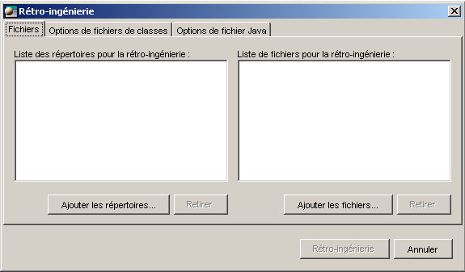

La rétro-ingénierie Java / XMI
Il y a plusieurs types de fichiers possibles dans le processus de rétro-ingénierie :
- Fichiers de source Java (.java).
- Fichiers de classe Java (.class).
- Archives Java (.jar).
- Fichiers Java comprimés (.zip).
- Archives d'application Web (.war).
- Fichiers XMI (XML Metadata Interchange) (.xmi .xml).
Le fonctionnement
Pour faire la rétro-ingénierie:
- Dans l'explorateur, sélectionnez d'abord le projet dans lequel vous désirez que le modèle soit ramené.
- Choisissez Outils > Java/XMI > Rétro-ingénierie Java/XMI. L'interface de rétro-
ingénierie Java apparaît.

-
Cette fenêtre vous permet, lorsque vous planifiez de faire la rétro-ingénierie, d'ajouter des fichiers et aussi des répertoires complets contenant un lot de fichiers.
- Cliquer sur le bouton Rétro-ingénierie pour exécuter l'opération. Un message apparaîtra
lorsque la rétro-ingénierie sera achevée, vous offrant un rapport détaillé de l'opération.
Le modèle ramené apparaîtra dans la fenêtre Explorateur de Open ModelSphere.
Diagrammes et représentations graphiques
Le modèle fraîchement extrait ne comporte pas encore de diagrammes. Vous devez donc les ajouter sous le modèle de classe et sous les paquetages qui vous intéresse.
Cliquez-droit sur l'icone du modèle de classe ou d'un paquetage et dans le menu contextuel, choisissez: Add > Diagramme.
Un diagramme sera alors ajouté. Pour visualiser ce diagramme, double-cliquez sur son icone dans l'explorateur.
La fenêtre du diagramme apparaitra, mais elle sera complètement vide.
C'est que les représentations graphiques des objets n'existent pas encore.
(Dans ModelSphere, les objets et leur représentations graphiques sont indépendants.) Pour générer les représentations graphiques des objets, cliquez-droit dans le fond du diagramme et choisissez dans le menu contextuel : Ajouter les objets du diagramme.
Maintenant, afin de rendre le modèle un peu mieux disposé, cliquez-droit dans le fond du diagramme et choisissez dans le menu contextuel :
Disposer le diagramme en entier.
Les résultats
Après le processus de rétro-ingénierie, vous obtiendrez ceci :
- {Non résolu} : l'importation est effectuée sur un paquetage (*) et aucun préfixe
n’est ajouté au nom de classe.
- Classes d'application : ce sont les paquetages, les classes et les unités de
compilation des fichiers Java choisis ou ceux dans les répertoires.
- Références externes : ce sont tous les paquetages et classes mentionnés
dans les classes choisies pour la rétro-ingénierie.